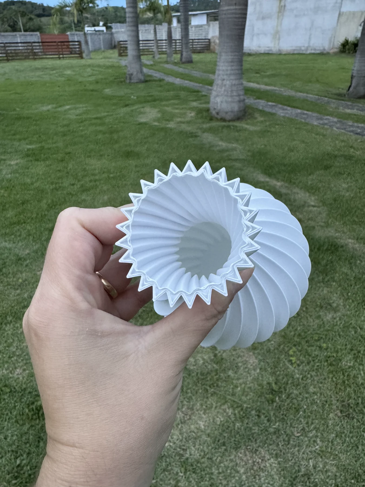

Exemplo: 3 vasos econômicos por R$ 30,00.
VERSÃO 01 / MAIS ACESSÍVEL
Versão Econômica — Mais economia para decorar
Uma opção para quem busca decoração com preço mais acessível. Essa versão utiliza uma configuração de impressão com menor consumo de filamento, resultando em uma peça geralmente mais leve e com paredes mais finas.
- Menor consumo de filamento.
- Paredes mais finas.
- Peça mais leve.
- Preço mais acessível.
- Ideal para decoração e para quem prioriza economia.
Tempo de produção: como referência informada pela Cubic Maker, uma peça pode levar cerca de 1h30 nesta versão.
Por utilizar menos material, esta versão pode apresentar menor resistência mecânica do que a versão reforçada. O desempenho depende do formato e da configuração de cada peça.